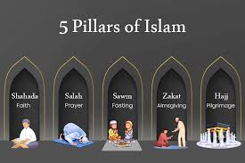

The Black Ummah
Exploring faith, history, and the legacy of African-American Muslims.
Exploring faith, history, and the legacy of African-American Muslims.
Islam has been present in America since the 17th and 18th centuries. Enslaved West African Muslims brought their faith with them, forming the earliest roots of Islam in the United States. Today, Islam continues to shape communities across the country.

Learn about the Five Pillars and daily life practices in Islam.

Discover the holy book of Islam and its structure.

Explore the history and growth of Islam in the U.S.

Learn about influential leaders and their legacy.

Islam is built upon the Five Pillars: Shahada (faith), Salah (prayer), Zakat (charity), Sawm (fasting during Ramadan), and Hajj (pilgrimage to Mecca). These pillars guide daily life and spiritual discipline.
The Qur'an is the holy book of Islam, believed to be the word of God revealed to the Prophet Muhammad. It is written in Arabic and is divided into chapters called Surahs.
Islam in America has grown significantly over the centuries. Today, millions of Muslims live across the United States, contributing to culture, education, politics, and community life.
African-American Muslims have played a major role in American Islamic history. Leaders such as Malcolm X and Muhammad Ali brought national attention to Islam and civil rights.